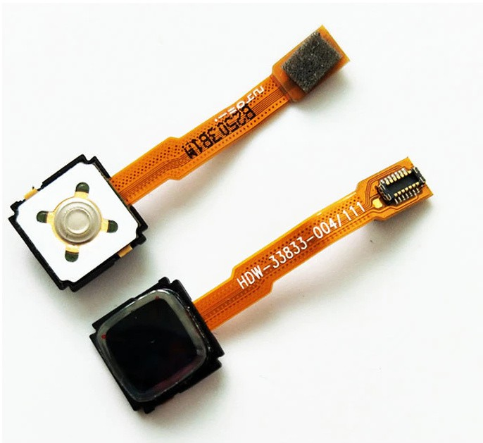

Prior Art¶
Published on 2021-06-22 in Home Button for Keyboards.
There is one other attempt at using this kind of sensors that I know of. It’s an old post on the Arduino forum, together with a YouTube video with the demonstration, and a few missing images: https://forum.arduino.cc/t/blackberry-joystick-navigation-key- hack/61454/12
In this case a button from Blackberry 8520 was used, which has a very fancy connector, similar to those used sometimes for displays. The sensor itself seems to use SPI protocol and registers very similar to mouse sensors — which makes a lot of sense, since it is basically the same sensor as in an optical mouse, only with different optics and physical shape.
